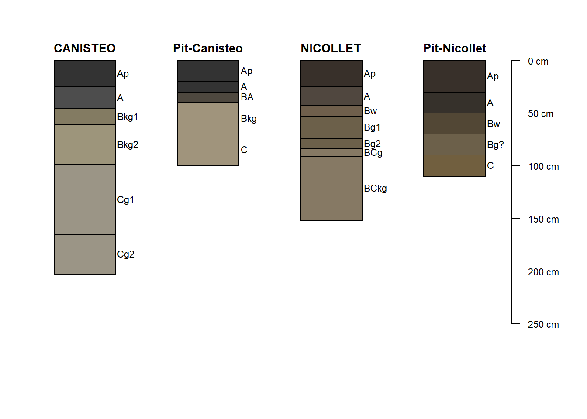

2 Waseca Soil Pits
date: 2020-07-11
knitr::opts_chunk$set(echo = TRUE)
library(dplyr)
library(readxl)
library(aqp)
library(munsell)
library(soilDB)2.1 About
Soil pits in Vivian Township, Waseca County, MN. Just north of Faribault county line. Visited July 8, 2020 for filming of UMN Extension educational video on soil structure.
Pea field with 2 pits dug by cooperator. First pit in the headlands where pea health was very poor. Second pit directly north ~30m from headland pit.
Field pit slightly upland from headland pit. Cattails visible in field corner not far from headlands pit - clearly a wet area. Field tiled for drainage, tile ~3 feet deep in this area.
Headlands Pit Canisteo? Official Series Description here
Located at 43.8483, -93.6614
Field Pit Nicollet? Official Series Description here
Located at 43.8487, -93.6614
2.2 Description data collected
## PedonID id hzname top bottom hue value chroma Texture HzID
## 1 Headland Pit-Canisteo Ap 0 20 N 2.0 0 SiC 1
## 2 Headland Pit-Canisteo A 20 30 N 2.0 0 SiC 2
## 3 Headland Pit-Canisteo BA 30 40 2.5Y 3.0 1 CL 3
## 4 Headland Pit-Canisteo Bkg 40 70 2.5Y 6.0 2 CL 4
## 5 Headland Pit-Canisteo C 70 100 2.5Y 6.0 2 CL 5
## 6 Field Pit-Nicollet Ap 0 30 10YR 2.0 1 CL 6
## 7 Field Pit-Nicollet A 30 50 2.5Y 2.5 1 CL 7
## 8 Field Pit-Nicollet Bw 50 70 2.5Y 3.0 2 CL 8
## 9 Field Pit-Nicollet Bg? 70 90 2.5Y 4.0 2 CL 9
## 10 Field Pit-Nicollet C 90 110 2.5Y 4.0 3 L 10
## Effervescence
## 1 NA
## 2 SL
## 3 ST
## 4 ST
## 5 ST
## 6 NA
## 7 NA
## 8 NA
## 9 NA
## 10 ST - masses only## PedonID id hzname
## 1 Headland Pit-Canisteo Ap
## 2 Headland Pit-Canisteo A
## 3 Headland Pit-Canisteo BA
## 4 Headland Pit-Canisteo Bkg
## 5 Headland Pit-Canisteo C
## 6 Field Pit-Nicollet Ap
## 7 Field Pit-Nicollet A
## 8 Field Pit-Nicollet Bw
## 9 Field Pit-Nicollet Bg?
## 10 Field Pit-Nicollet C
## Redox
## 1 <NA>
## 2 <NA>
## 3 <NA>
## 4 <NA>
## 5 Common, fine & medium Fe conc 7.5YR 5/8
## 6 <NA>
## 7 <NA>
## 8 <NA>
## 9 Few fine Fe conc 7.5YR 5/8
## 10 Common fine Fe conc 7.5YR 5/8; some pockets of Fe-stained coarse sand & gravel## PedonID id hzname
## 1 Headland Pit-Canisteo Ap
## 2 Headland Pit-Canisteo A
## 3 Headland Pit-Canisteo BA
## 4 Headland Pit-Canisteo Bkg
## 5 Headland Pit-Canisteo C
## 6 Field Pit-Nicollet Ap
## 7 Field Pit-Nicollet A
## 8 Field Pit-Nicollet Bw
## 9 Field Pit-Nicollet Bg?
## 10 Field Pit-Nicollet C
## Notes
## 1 <NA>
## 2 <NA>
## 3 <NA>
## 4 <NA>
## 5 <NA>
## 6 <NA>
## 7 <NA>
## 8 <NA>
## 9 <NA>
## 10 A few limestone coarse fragments 4-6cm in diameter; some carbonate masses that effervesce strongly, but overall matrix does not2.3 Create SPC objects
SPC = SoilProfileCollection
# promote data_min_st dataframe to SoilProfileCollection
depths(data_pits) <- id ~ top + bottom
#check that we have successfully converted class to SPC
class(data_pits)## [1] "SoilProfileCollection"
## attr(,"package")
## [1] "aqp"# OSD data for the two series I think we have at the Waseca pits
osd_pedons <- fetchOSD(c('canisteo', 'nicollet'))2.4 Compare field descriptions with OSDs
# join the OSD pedons with the pit pedons
both <- aqp::union(list(osd_pedons, data_pits))
# set margins
par(mar = c(5,3,2,2), xpd=NA)
# plot soil profile collection
plotSPC(both, width = 0.25, name = 'hzname', plot.order= c(1,3,2,4), cex.names = 0.7)